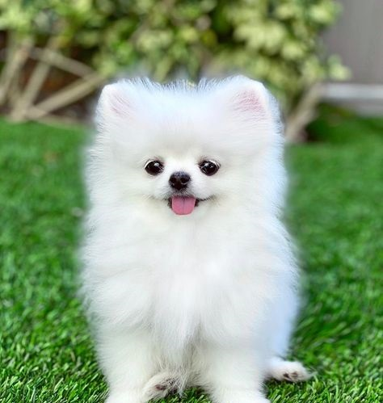

Cat

Cats: agile, specialized collarbone, impeccable balance, always land on feet, graceful acrobats.
- Scientific Name: Felis catus
- Avg. Length: Varies (45-60 cm)
- Avg. Lifespan: 3-16 years
- Habitat: Various habitats worldwide andranging from forests to grasslands
Dog
Dogs: loyal, companionable, diverse breeds, unique traits, lovable companions, faithful friends.
- Scientific Name: Canis lupus familiaris
- Avg. Height: Varies depending on breed
- Avg. Lifespan: 10-13 years
- Habitat: Domesticated, found in homes worldwide
Rabbit

Rabbits are small herbivorous mammals known for their long ears, powerful hind legs, and ability to hop.
- Scientific Name: Oryctolagus cuniculus
- Avg. Length: Varies (20-50 cm)
- Avg. Lifespan: 8-12 years
- Habitat: Found in various habitats worldwide, forests, and grasslands